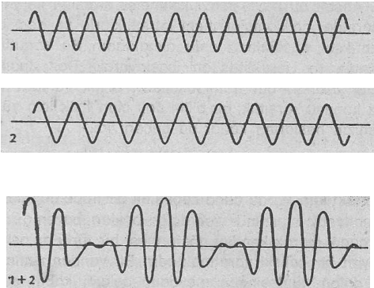

«Alışageldiğimiz düşünceleri altüst eden karşıtlıkların temelinde içsel tecrübelerimizi, normal konuşma dili ile anlatmak zorluğu yatmaktadır. Oysa içsel tecrübelerimiz, konuşma dilini çok aşan bir yaşayıştır.»
D. T. Suzuki
«Anlatım dilinin sorunları çok önemli bir yer tutar. Örneğin atomların yapıları hakkında konuşmak ve açıklama yapmak isteriz. Ama bu konuda alışılagelmiş konuşma dilimiz yardımıyla fikir yürütmek ve atomları bu dille açıklamaya çalışmak tamamen imkânsızdır.»
W. Heisenberg
Bütün bilimsel model ve kuramların, yalnızca yaklaşık bir özellik taşıdıkları ve bunların kelimelerle yapılmış anlatımlarının konuşma dilinin eksikliğine ve muğlaklığına tâbi oldukları, daha yüz yılımızın başlarına doğru kabul görmeye başlamıştı. Çünkü o tarihlerde, hiç de beklenilmeyen bazı gelişmeler ortaya çıkmıştı. Atomların dünyası ile ilgili olarak yapılan araştırmalar, bilim adamlarını, günlük konuşma dilinin birçok şeyi anlatmak için kesin, yeterli ve tam olmadığı konusunda fikir birliğine vardırmıştı. Hele bu dil ve kavramları aracılığı ile atom ve atom-altı fenomenlerin açıklanması hiç mümkün değildi. Ayrıca modern fiziğin iki temel direği niteliğindeki Kuantum ve izafiyet kuramları bize, içinde bulunduğumuz gerçekliğin, normal mantık sınırlarını çok aşan bir fenomen olduğunu göstermeye başlamışlardır. Bu kuramlar da, tıpkı atom-altı araştırmalar ile uğraşan bilim adamları gibi, yeni gerçekliğin alışılageldik kokuşma dili yardımıyla açıklanamayacağını belirtiyorlardı. Heisenberg bu konu ile ilgili şunları yazmaktadır:
«Dilin kullanımı ile ilgili sorunlarım en büyüğü, Kuantum kuramı çevresindeki açıklamalarda gün ışığına çıkmıştı. Çünkü ilk olarak burada geliştirilen matematiksel tasarımları ifade edilebilecek ve açıklayacak karşılıkların normal dilin yapısı, içinde bulunmayışı sorunu karşımıza çıkmıştır. Bunun yanı sıra da kullandığımız ve kullanımlarına alıştığımız kavram ve tasarımlarımızın, atomların yapısını açıklamakta Yetersiz kaldıkları gerçeği de bizleri şaşırtmıştır»(l).
Yukarıdaki açıklama, felsefî açıdan modern fiziğin ortaya koyduğu en önemli gelişimlerden birini yansıtmaktadır, işte bu noktada. Doğu felsefesi ile Modern fizik arasında bir benzerliğin kurulması mümkün olmaktadır. Batı felsefesinde, mantıkçılık ve akılcılık her zaman en önemli fikir yürütme ve argümantasyon aracı olarak kullanılagelmiştir. Felsefî düşüncelerin tümü, bu iki temele dayanmaktadır. Keza, Bertrand Russel'e göre, bu durum, dinsel felsefe için bile geçerlidir. Ama öte yandan Doğu mistisizminde, Gerçekliğin, her zaman normal konuşma dilini aştığı kabul edilmiştir. Bundan dolayı da Uzak Doğu bilginleri mantığın ve alışıldık kavram ve fikirlerin ötesine gitmekten sakınmamışlardır. Kanımca, Doğu bilginlerinin, Batı'daki dostlarına kıyasla, daha başarılı gerçeklik modelleri ortaya atmış olmalarının ardında, böyle bir felsefî temel yatmaktadır.
Doğu mistikçilerinin, konuşma dili ile ilgili karşı karşıya kaldıkları sorunların tümü, günümüz fizikçilerinin dil sorunuyla hemen hemen aynıdır. Örneğin, bu bölümün başında yer alan iki alıntı, aslımda birbirinden tamamen, farklı ortamlarda dile getirilmişlerdi. Çünkü birincisinde D. T. Suzuki, Buddhizm (2) hakkında, ikincisinde de Werner Heisenberg atom fiziği (3) hakkında konuşmaktaydı. Fakat bu iki açıklamanın yine de neredeyse birbirlerinin aynıları olmaları, çok şaşırtıcı bir gerçektir. Mistikçiler ve fizikçiler, elde ettikleri bilgileri, başkalarıyla paylaşmak isterler. Ancak bu paylaşmayı kelimeler aracılığı ile yaptıklarında, açıklamaları hem karşıtlıklarla ve hem de mantıksal güçlüklerle dolu olmaktadır. Bu karşıtlık, aslında, ta Heraklitus'tan başlayarak Don Juan'a kadar uzanan bütün mistikçilerin ortak yanıdır. Ve söz konusu karşıtlık, bir bilim dalı olan fizik için yüzyılımızın başlarına kadar da geçerli idi.
Atom fiziğinde görülen bütün karşıtlıkların temellinde, ışığın ikiliği, yani iki farklı biçimde davranışı yatmaktadır. Ya da daha kapsamlı bir ifade ile; elektromanyetik ışınımın bazen dalga boyları, bazen de bir parçacık olarak kendini göstermesi bir türlü anlaşılamayan bir çelişki yaratmaktadır. Bir yandan ışınımın bir dalga kümesinden meydana geldiği kabul edilmektedir, çünkü bu ışınım, yalnızca dalgaların oluşturabildikleri girişim olayını meydana getirmektedir: Yani iki adet ışık kaynağından çıkan ışık huzmesinin, belirli bir uzaklıktaki ışınım toplamı, bu iki kaynağın aritmetik toplamına eşit olmayabilir. Işınım toplamı, aritmetik toplamdan ya biraz daha fazla, ya da biraz daha az olacaktır. Bu olağanüstü ve aynı zamanda da basit deneyi, iki değişik kaynaktan çıkan dalgaların yaptıkları girişim ile kolaylıkla açıklayabiliriz. Şöyle ki: Dalga tepe noktalarının üstüste bindiği yerlerde (rezonans) gözlemlenen ışınım, aritmetik toplamdan daha fazla olacaktır. Bunun tersi olarak eğer bir dalga tepesi ile bir dalga dibi üstüste binerse (enterferans), toplamda daha az bir ışınım ölçülecektir. Bu tür bir girişim olayını kolayca "hesaplayabiliriz. Elektromanyetik ışınımın gözlendiği her yerde, böyle girişim olayları ile karşılaşmak mümkündür, işte bu nedenle ışınımın ardında, dalga boylarının yattıklarını rahatlıkla söyleyebiliriz.

İki dalganın girişimi
Ama öte yandan aynı elektromanyetik ışınım, fotoelektrik olay denilen bir etkiye de neden olmaktadır: Uygun bir dalga boyuna sahip mor ötesi bir ışınımı bazı metallerin üzerine yönelttiğimizde, söz konusu metal yüzeyinden birçok elektron «dışarıya fırlayacaktır». Yani bu olaya bakarak, incelediğimiz ışınımın, çok sayıda parçacıklardan meydana geldiğini düşünebiliriz. Buna benzer bir durum, röntgen ışınımının «saçılma» deneylerinde de gözlenebilir. Bu deneylerin hepsini, ancak «ışık parçacıklarının» elektronlarla çarpıştıklarını varsayarak açıklayabiliriz. Ama röntgen ışınımında aynı anda, dalgalara özgü girişim saçakları da oluşmaktadır. Şimdi, atom kuramının ilk yıllarında fizikçileri çileden çıkartan soruyu sorabiliriz: «Nasıl olur da elektromanyetik ışınım hem bir parçacık olarak (yani küçücük bir hacme sıkıştırılmış bir varlık olarak) ve aynı zamanda do uzayın büyük bir bölümüne yayılabilen bir dalga boyu olarak karşımıza çıkmaktadır?» Ne konuşma dili ve ne de hayal gücümüz ile incelediğimiz gerçekliğin bu yüzünü tam anlamıyla kavrayamıyoruz.
Doğu mistisizminde ise, gerçekliğin karşıtlıklarla dolu yönleriyle başa çıkabilmek için, birçok değişik yöntemler geliştirilmiştir. Örneğin söz konusu sorun Hinduizm'de, mitolojik ditin kullanımı ile, Buddhizm ve Taoizm'de de, karşıtlıkların üzerine gitmek suretiyle çözülmeye çalışılmıştır. Örneğin Lao Tzu'nun yazmış olduğu ve Taoist'lerin temel kitabı durumunda olan Tao Te Ching, aşırı derecede karmaşık, girift ve hatta bazen de neredeyse mantıksız bir dille yazılmıştır. Yani bu kitap, gizemli karşıtlıklar ve bunların yarattığı etkilerle dolup taşmaktadır. Ancak güçlü, veciz ve çok şiirsel bir anlatımla okuyucunun dikkati yakalanmaya çalışılmış ve öğrencinin sahip olduğu ve alıştığı mantıklı akı! yürütme tekniklerinden kurtulması hedeflenmiştir.
Çin ve Japon Buddhist'leri, Taoist yazı ve anlatım -tekniğini kullanarak, mistik tecrübenin karşıtlıklarla dolu özelliklerimi çarpıcı bir biçimde ortaya dökmeye çalışmışlardır. Zen bilgini ve öğretmen Daito, öğrencisi olan imparator Godaigo'yı gördüğünde, ona şunları söylemiştir:
«Binlerce 'kalpa' önce bizi ayırmışlardı,
ama biz yine de bir an için bile olsa
birbirimizden uzaklaşmadık.
Yüz yüze gelmediğimiz halde,
her gün birbirimizi gördük» (4).
Aslında, sözlü anlatımda karşılaşılan güçlüklerin, Zen Buddhizm’inde, özel bir yeteneğe ihtiyaç duyan bir erdem haline dönüşmüş olduğunu bile ifade edebiliriz. Örneğin «Koan Sistemi» yardımı ile, öğretinin bütünüyle kelimesiz olarak aktarılmasının bir yolu bile bulunmuştu. Sözünü ettiğimiz koanlar, tamamıyla anlamsız bazı bilmecelerden meydana gelmektedirler. Bu bilmecelerin amacı, Zen öğrencisine akıl yürütmenin ve mantığın sınırlılığını dramatik bir biçimde yaşatmaktır. Bilmecelerin anlamsız söz seçimi ve karşıtlıklarla dolu içeriği, akıl yürütmeyle çözümünü imkânsız kılmaktadır. Onlar, sanki düşünme sürecini durdurmak için geliştirilmiş birer hazine gibidirler. Öğrenci böylece, gerçekliğin sözlü olmayan tecrübe edilişine hazırlanmış olur. Günümüz Zen öğretmenlerinden Yasutani, bir gün bir Batı'lı öğrenciye, en tanınmış ve en güzel koanlar'dan bir tanesini şöyle anlatmıştır:
«En basit, ve burudan dolayı da en güzel koanlardan biri de «Mu»dur. Hikâyesi şöyledir: Günlerden bir gün, bir keşiş, Çin'in en tanınmış Zen öğretmeni olan Joşu'ya gider ve ona şöyle bir soru yöneltir:
«Gerçekten bir köpek, Buddha-doğasına sahip midir?» Joşu, keşişe şöyle cevap verir: «Mu!».
Şimdi «Mu», sözlük anlamında hayır ya da yok demektir. Ama Joşunun sözündeki önem burada gizli değildir. Çünkü Mu, aynı zamanda yaşayan, çalışan ve hareket eden Buddh'a doğasının bir anlatım biçimidir. Sana düşen görev ise, söz konusu Mu'nun ruhunu ya da özünü yakalamaktır. Ancak bunu, düşünsel analizlerle değil, kendi içindeki derinlikleri araştırarak yapmalısın. Bunu yaptıktan sonra da benim karşıma çıkıp, Mu'yu, gerçekten ve canlı olarak yaşayan bir gerçeklik olarak algıladığını ve hiçbir tasarıma, kurama ya da soyut açıklamaya yönelmeden kavrayabildiğim ispatlamalısın. Şunu hiçbir zaman unutma: Mu'yu alışılageldik düşünce ve idrak gücünle anlayamazsın, Onu ancak tüm benliğinle yakalayabilirsin» (5).
Konuya ilk kez ilgi duyan birisi için, her Zen öğretmeni, ya yukarıdaki Mu-koanını anlatacak ya da aşağıdaki iki koan'dan bir tanesini soracaktır:
«Henüz daha sana, hayat verilmeden önce, senin ilk biçimin nasıldı acaba?»
«İki elini birbirine çırparak bir ses çıkartabilirsin. Peki bir elin sesi nedir?»
Yukarıdaki koanların hepsinde, tek bir çözüm Vardır ve iyi bir Zen öğretmeni bu çözümü hemen söyleyebilir. Söz konusu çözüm bir kez anlaşıldığında, koanın karşıtlıklarla dolu olma özelliği birdenbire yok olur ve sırrına varılmış bu koan, oluşumuna ve uyanmasına yardımcı olduğu güçlü bir bilincin olağanüstü bir nitelendirmesi olarak görülmeye başlanır.
Örneğin Rinzai okulunda, öğrencilere çözülmek üzere birçok sorular verilir. Bu koanların her biri, Zen öğretisinin değişik bir yönüne ışık tutacak niteliktedir. Rinzai okulu, sahip olduğu karmaşık öğretileri, yalnızca bu yolla öğrencilere iletmektedir. Yani öğrenciye hiçbir pozitif açıklamada bulunulmamaktadır. Öğrenci, .kendi gücüyle ve bu koanlar aracılığı ile gerçekliği kavramak görevi ile baş başa bırakılmıştır.
işte burada yine atom fiziğinin başlarında yaşanmış olan karşıtlık dolu durumlarla ilgili benzerlikler ortaya çıkmaktadır. Atom fiziği çalışmalarının ilk devrelerinde, aynen Zen'de görüldüğü gibi, mantıklı akıl yürütmeyle çözülemeyecek, karşıtlıkların ardına gizlenmiş bir gerçeklikle karşı karşıya kalınmıştı. Bu gerçekliği anlayıp, kavrayabilmek için ise, yeni bir bilinç düzeyine gerek duyulmuştu. Bu yeni bilinç, atomsal gerçekliğin yeni bir kavranışı ile ilgiliydi. Ancak burada, bizi bu yenli bilindiğe ulaştıracak öğe, yaşlı bir öğretmen değil, içinde yaşadığımız doğanın ta kendisi idi. Ama içinde yaşadığımız doğa da, aynen Zen öğretmenlerinin yaptığı gibi, sorutan soru hakkında hiç bir açıklamada bulunmuyordu. Doğamız, yalnızca bilmeceleri sormakla yetiniyordu.
Bir koanı çözebilmek için, öğrenci güçlü bir dikkate ve katılıma gerek duymaktadır. Zen ile ilgili yazılmış kitaplarda koanların, öğrencilerin kalplerini ve akıllarını yakaladıklarını ve bunun sonucu olarak da öğrencilere gerçek bir düşünsel gelişme imkânı tanıdıkları söylenir. Böylece öğrencileri sürekli gerilim altında tutarak, onların dünyanın tümünü bir şüphe ve soru yumağı olarak görmeleri sağlanmaktadır. Kuantum kuramının temellerini atan insanlar da aynı durumla karşı karşıya kalmışlardı. Heisenberg, bu karmaşık durumu pek güzel ve çarpıcı bir biçimde şöyle ifade etmektedir:
«Bohr ile, yaptığımız tartışmalar hatırlıyorum. Saatler süren ve ancak gecenin geç vakitlerinde nihayetlenen tartışmalarımızın neticesinde, neredeyse sürekli bir ümitsizlik meydana çıkıyordu. Bu tür tartışmalardan sonra, yakınlardaki bir parkta tek başıma yürüyüşe çıkıyordum ve kendi kendime hep şu soruyu soruyordum: Doğa, atom denemelerinde olduğu kadar saçma olabilir miydi?» (6).
Cisimlerini özgün ve temel özellikleri incelendiği zaman, ortaya çıkan sonuçlar, zihnimiz için her zaman saçma ve çelişik olacaktır. Bu gerçeği eski metafizikçiler çok uzun zamanlardan beri bilmektedirler. Ama bilim adamları, bunu daha yeni keşfetmeye başlamışlardır. Çünkü onlar yüzyıllardır, sayısız biçimlerde gözlenen olguların ve «doğanın temel kanunlarının» izini sürmekle meşguldüler. Ayrıca söz konusu olgu ve fenomenler, bunları inceleyen bilim adamının makroskopik ortamlarında (yani, elle tutulup gözle görülen dünyada) meydana gelmekteydi. Bundan dolayı da, birtakım duyusal tecrübelerden söz etmek mümkündü. Ama bilim adamlarının kullandıkları dil, görüntüleri ve düşünsel tasarımları bu tür bir tecrübeden soyutladığı için, doğal olgu ve fenomenleri yeteri derecede açıklayabileceği sanılıyordu.
Evrenin oluşumu ile ilgili özellikleri soruşturan araştırmalara, Newton'cu mekanik evren modeli çerçevesinde cevap verilmekteydi. Mekanik evren modeli, ontik Yunanistan'da oluşan Demokritus'un modeline benzer bir biçimde, bütün evrensel olgu ve fenomenlerin sert ve bölünmez atomların hareketleri ve karşılıklı etkileşimleri sonucunda oluştuklarını savunuyordu. Bu atomların özellikleri, normal hayatımızdaki bilardo toplarının özelliklerine benzemekteydi. Yani bu model makroskopik duyusal tecrübelerimiz (dünyayı üç boyutlu biçimde algılayışımız) doğrultusunda oluşturulmuştu. Böyle bir yaklaşımın atomların dünyasında geçerli olup olmadığı konusunda ise, hiç akıl yürütülmem işti. Aslında bunun deneysel olarak araştırılması da o dönemlerde imkânsızdı.
Ancak yirminci yüzyıla gelindiğinde, fizikçiler maddenin en küçük birimlerini inceleyebilecek imkânlara kavuşmuşlardı. Artık fizikçiler çok karmaşık teknolojiler aracılığı ile doğanın derinliklerine dalmakta, «maddeyi oluşturan temel yapı taşlarını» bulmak amacıyla maddeyi bölüm bölüm ortaya çıkarmaktaydılar. Atomların varlıkları tatmin edici bir biçimde ispatlandıktan sonra, atomları oluşturan parçacıklar da (yani, atomun çekirdeği ve onu çevreleyen elektronlar) keşfedilmişti. Son olarak da çekirdeği oluşturan' parçacıklar yani, protonlar ve nötronlar) ortaya çıkarılmış ve diğer atom-altı parçacıkların varlığı tespit edilmişti.
Modern deneysel fiziğin sahip olduğu gelişmiş ve duyarlı aygıtlarla, atom-altı dünyasının derinliklerine rahatlıkla inilebiliyordu. Artık içinde yaşadığımız makroskopik çevreye alışık duyularımız aracılığı ile, söz konusu atom-altı dünyayı ve orada hüküm süren yasaları öğrenebilecek duruma gelmiştik. Aslında duyusal kavrayışımız, yalnızca Geiger sayacının bir sesiyle ya da fotoğraf plakasındaki bir karartının görüntüsüyle sınırlı kalmaktaydı. Ayrıca gördüğümüz ve duyduğumuz her şey, incelediğimiz fenomenin kendisi de değildi, biz yalnızca bu fenomenin etkilerini gözlemlemekteydik. Çünkü atom ve atom-altı dünya, bir kural olarak bizim algı alanımızın ötesinde bir gerçekliktir.
Modern araçların yardımı ile atomların ve onları oluşturan öğelerin özellikleni ancak dolaylı bir biçimde «gözlemlenebilmekte», böylelikle atom-altı dünya, bir bakıma, «tecrübe» edilebilir bir duruma gelmektedir. Ancak böyle bir- tecrübeyi, günlük hayatımızda yaşadığımız tecrübelerle karşılaştıramayız. Çünkü bu durumda madde hakkında ele geçirilen bilgiler, doğrudan doğruya duyusal algılamanın bir sonucu olarak ortaya çıkmazlar. Bundan dolayı da, aslen duyularımızın dünyasına dayanan günlük konuşma dilimiz, söz konusu fenomenleri ve gözlemleri açıklamakta yetersiz kalır. Yani doğanın derinliklerine inildikçe, alışageldiğimiz dilin birçok kavram ve tasarımlarımı iptal etmek durumu doğar.
Felsefî açıdan bakıldığında, sonsuz küçüklükteki öğelere doğru yapılan böyle bir gezide atılan ilk adım, çok büyük bir önem taşımaktadır. Çünkü atomların içi ve yapısı hakkımdaki araştırmalar, sahip olduğumuz ve beş duyumuzun algılamalarına bağlı hayal gücümüzün ne denli sınırlı olduğunu göstermiştir. işte bu noktadan sonra da, fenomenlerin mutlak kesinlikle mantığa ve sağduyuya dayandırılmaları mümkün olmamaktadır. Bilim adamları, atom fiziği aracılığı ile, ilk defa cisimlerim temel doğasına bir göz atabilme imkânına kavuşmuş oldular. Aynen mistik-çilerim yaptıkları gibi, artık fizikçiler de gerçekliğin duyudışı tecrübesini uygulayabilmektedirler. Ve yine mistikçilerim karşılaştıkları gibi, fizikçiler de söz konusu tecrübe edişin, karşıtlıklarla dolu yönleri ile karşı karşıya kalmaktadırlar, işte bu andan itibaren modern fiziğin model, kavram ve kuramları, Doğu felsefesinde görülen temel yaklaşımlara benzerlik göstermeye başlamıştır.